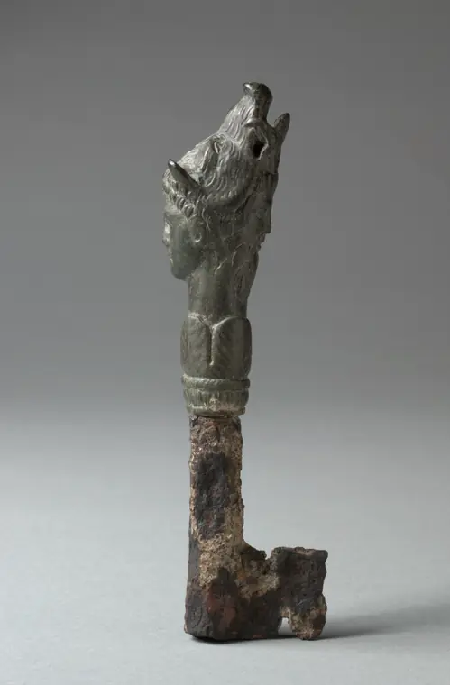

The hour of silence: a UX study of campus visitor entry
The form was annoying. The real problem was a step that nobody owned.
Painting: Thomas Cole, View of Schroon Mountain, Essex County, New York, After a Storm, 1838. Cleveland Museum of Art, CC0.
A parent drove three hours to visit her son. She started the check-in form an hour before she arrived, so that she would not have to wait. She still stood in the rain outside the gate. She got in only when somebody inside the university made a phone call.
That story started this study. I wanted to know why a system that exists to make entry faster did nothing for her, and what a better one would do.
How entry works now
Entry runs through a visitor management system from an outside company. A visitor fills in six screens at the gate, waits for someone to approve the request, and then gets a QR pass on WhatsApp.
The obvious target is the form. It is long and it is annoying. But the research showed that a better form moves one step of the journey map from −1 to 0. The lowest point of the journey stays at −5.
The finding
The lowest point is the approval. The approval step has no owner, no time limit and no failure path. If the person you named does not act, nothing is rejected. The system holds the request, then cancels it without telling you, and you start again.
So the main recommendation is a timer. If the first approver does not answer within an agreed time, the request moves to a named backup by itself. The visitor types nothing again. The guards already do this by phone. The design only makes it part of the system.
The method
The study followed a standard sequence, with a small and honest sample at each step.
| Phase | Method | What it produced |
|---|---|---|
| Research | Interviews: 1 visitor, 2 gate staff | Persona, empathy map, journey map, core pain point |
| Structure | Card sort (8 valid) and tree test (5) | A six-section menu, changed to five after testing |
| Priorities | MoSCoW and a desirability, feasibility and viability matrix | Four must-have features |
| Design | Wireframes, heuristic inspection, prototype | 16 screens, 3 heuristic fixes, a clickable Figma flow |
| Testing | Unmoderated usability test (8) | 97% reported success against 44% real understanding |
| Redesign | Changes from the test, rebuilt in HTML | A working app |
Fieldwork ran from 31 July to 5 August 2026. Every participant is anonymous.
What the usability test found
Eight people tried the Figma prototype on 16 and 17 September 2026. They reported 97% of tasks as done. But only 44% of their answers showed that they understood the screen they were on.
That gap was the most useful result of the study. Five of the eight people thought that a sent request was already approved. Only one of the eight found how to add a second visitor. If I had only asked people whether they finished, I would have shipped a design that confused most of them.
The rebuilt app
The working app fixes what the test found. The waiting screen now opens with the words "Not approved yet". It names who holds the request and the minute when the backup approver takes over. Every status screen has a "Call gate desk" button.
Behind the screens, the server sends the request to an approver on WhatsApp. The approver replies YES or NO, and the visitor sees the decision on the same page within three seconds. At the gate, a guard checks the code and records the entry and the exit. After the exit, the code stops working.
What I would tell another designer
Look for the step that nobody owns. Forms are easy to see and easy to fix, so they get the attention. The worst part of this journey was a silence: a request that waited for a person who did not know it was waiting.
The full study, with the evidence for every change, is on the study site.
The work this is about

Campus Visitor Access StudyA UX study of visitor entry at Vijaybhoomi University. A parent stood in the rain at the gate because the approval step had no owner and no time limit. See it in the hall.

Computer science student at Vijaybhoomi University and founder of The Pulse Engine. I build local-first, open-source tools. See the portfolio or GitHub.